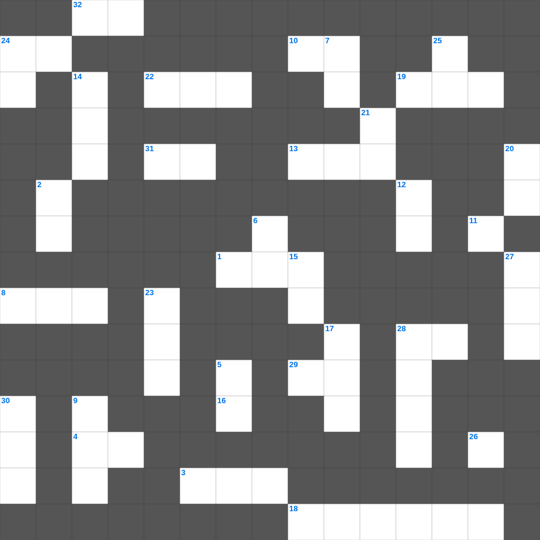

마가복음 마스터 50
📌 서비스 정의
십자가로세로는 교회 주보와 주일학교에서 사용할 수 있는 성경 기반 가로세로 퍼즐 서비스입니다. 성경 인물, 사건, 핵심 구절을 바탕으로 제작되었습니다. 온라인 풀이 및 인쇄 기능을 제공합니다.
📖 마가복음란?
마가복음은 가장 짧고 속도감 있게 기록된 복음서로, 예수님을 고난받는 종이자 능력의 메시아로 강조하며 그분의 행동과 사역을 중심으로 전개됩니다.
📚 마가복음의 주요 사건·주제
예수님의 세례와 시험 · 여러 치유와 축귀 사역 · 변화산 사건 · 예루살렘 입성과 고난 · 십자가와 부활
오늘은 마가복음의 주요 내용을 담은 마가복음 성경 퀴즈 문제를 준비했습니다. 총 35개의 힌트가 있으며, 주일학교 교재나 성경공부 자료로 활용하기 좋습니다. 무료로 즐기는 마가복음 가로세로 퍼즐을 지금 바로 풀어보세요!

📝 가로 힌트
1. 엘리야의 제자, 갑절의 영감을 구한 자
3. 엘리야와 바알 선지자들이 대결한 산
4. 에스더가 잔치에서 하만을 가리켜 한 말 '악한 이 사람'
8. 풀은 마르고 꽃은 시드나 우리 하나님의 말씀은 영원히 이것 하리라 하라
10. 나를 보내사 마음이 상한 자를 고치며 포로된 자에게 이것을
11. 우리에 양이 없으며 외양간에 이것이 없을지라도
13. 수산 성에서 유다인이 죽인 대적의 수
16. 털 깎는 자 앞에서 잠잠한 이것 같이 그의 입을 열지 아니하였도다
18. 하만의 아내가 모르드개를 죽이라고 제안한 방법
19. 에돔 족속의 조상
22. 레위기 말씀이 주어진 장소
24. 너희는 이전 일을 기억하지 말며 옛날 일을 이것 하지 말라
26. 아브라함에게 먼저 복음을 전하여 이르되 모든 이방인이 너로 말미암아 이것을 받으리라 하였느니라
28. 우리는 너희 가운데서 유순한 자가 되어 유모가 자기 자녀를 이것함과 같이 하였으니
29. 적게 심는 자는 적게 거두고 이것게 심는 자는 이것게 거둔다 하는 말이로다
31. 아마 그가 잠시 떠나게 된 것은 너로 하여금 그를 영원히 이것하게 함이리니
32. 네 입술은 이것 줄 같고 네 입은 어여쁘고
📝 세로 힌트
2. 요단 동쪽 두 지파 반이 돌아갈 때 준 당부 '이것을 지키라'
4. 엘리후가 욥의 세 친구에게 화를 낸 이유 '능히 이것하지 못하면서도 정죄함'
5. 호흡이 있는 자마다 여호와를 이것 할지어다
6. 보아스가 성문에서 만난 사람 '아무개여 이것으로 오라'
7. 요셉을 은 이십에 팔자고 제안한 유다
9. 모르드개의 업적이 기록된 책 '바사와 이것의 왕들의 역대일기'
12. 이스라엘아 들으라 (신명기 6:4)
14. 너희는 기쁨으로 나아가며 이것이 인도함을 받을 것이요
15. 그의 계명은 이것이니 곧 그 아들 예수 그리스도의 이름을 믿고 그가 우리에게 주신 계명대로 서로 이것할 것이니라
17. 느헤미야가 총독의 녹을 받지 않은 기간
20. 요한삼서 1장 4절: 자녀들이 어디 안에서 행하는 것이 가장 큰 즐거움인가
21. 나의 이것조차 조금도 귀한 것으로 여기지 아니하노라
23. 속이는 자 같으나 참되고 이것 자 같으나 유명하고
24. 이는 하늘이 땅보다 높음 같이 내 길은 너희의 길보다 높으며 내 생각은 너희의 이것보다 높음이니라
25. 범사에 우리 주 예수 그리스도의 이름으로 항상 아버지 하나님께 이것하며
27. 재판은 하나님께 속한 것인즉 사람을 이것하지 말라
28. 쉬지 말고 이것하라
30. 나사렛 예수 그리스도의 이름으로 이것
📖 함께 읽으면 좋은 성경사전
퍼즐을 풀기 전에 읽으면 힌트가 쉬워지고, 풀고 나서 읽으면 내용을 한 번 더 복습할 수 있습니다.
🧩 이 퍼즐에서 배우는 내용
이 퍼즐은 마가복음 마스터 50의 핵심 단어와 개념을 자연스럽게 복습할 수 있도록 구성되었습니다. 주일학교 수업이나 개인 성경공부에서 학습 내용을 점검하는 용도로 바로 활용할 수 있습니다.
🧑🏫 교회 교육 자료 활용
이 퍼즐은 주일학교 교재 추천 자료로 활용할 수 있고, 주일학교 주보에 넣기 좋은 분량으로 구성되어 있습니다. 수업용 주일학교 교안에 활동지로 붙이거나, 예배 후 복습용 주일학교 공과교재로 바로 사용할 수 있습니다.
🏷️ 키워드
마가복음 성경 퀴즈 문제, 마가복음, 십자가로세로, 성경퀴즈, 말씀퀴즈, 가로세로퍼즐, 주일학교 교재 추천, 주일학교 주보, 주일학교 교안, 주일학교 공과교재